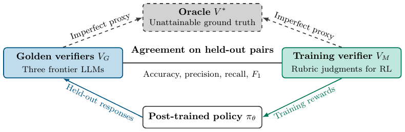
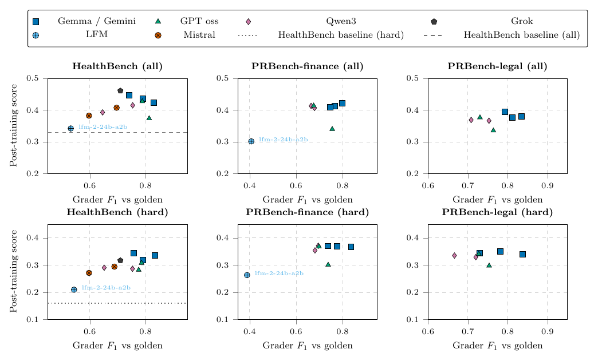
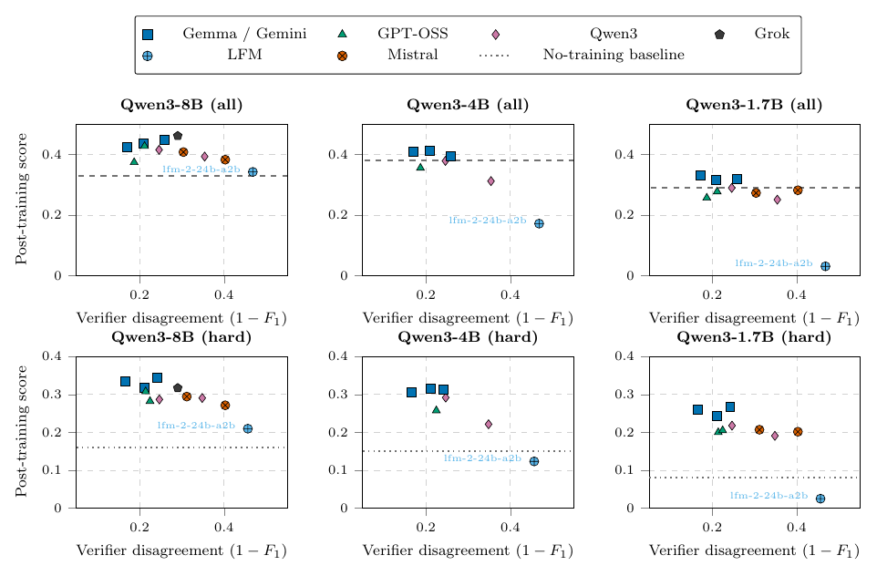

TL;DR — 46 runs GRPO (Qwen3 1.7B–8B) sur rubriques HealthBench / PRBench-legal / PRBench-finance, avec 12 vérifieurs d'entraînement différents et 3 juges « golden » frontier : le classement des vérifieurs par accord (accuracy, F1, ρ) avec le juge golden ne reproduit pas leur classement par score du policy post-entraîné, et des vérifieurs open-weight à ~$0.0005/tâche font aussi bien que des frontier à ~$0.13/tâche.
Claim principal, formulé précisément : - Ce qui est affirmé : sur les cellules testées (3 datasets × 2 splits d'éval × 3 goldens, trainee Qwen3 8B), un vérifieur choisi a posteriori comme « équilibré » (Gemma 4 26B fixe) capture 95 % de l'uplift disponible avec un score gap moyen de +0.010 vs le meilleur vérifieur éligible par cellule, et un choix purement « cost-first » (le moins cher avec accuracy ≥ 0.80, = GPT oss 20B) capture 82 % avec un gap de +0.027 ; réductions de coût de grading estimées 98.8 %–99.7 % vs le protocole golden [Tab. js-overall, Tab. strategy-audit]. - Sur quoi : rubriques binaires pondérées (11–18 critères/tâche), reward = somme pondérée normalisée des verdicts [Éq. 2, Éq. rubric score]. - Gain : ce n'est pas un gain de score, c'est un gain de coût à score quasi-constant, plus un résultat négatif méthodologique (l'accord ne sélectionne pas). - ⚠️ Les auteurs eux-mêmes bornent le claim : « These averages include larger losses in individual settings; they do not establish that verifier choices are interchangeable » [Abstract], et « Agreement remains informative, particularly for identifying very weak verifiers » [§1].
Catégorie : classé ENV parce que le papier construit un env de RL à rubriques à partir de deux benchmarks (dont PRBench-legal, qui n'était qu'un benchmark d'éval) et que tout son contenu utile est de la conception de reward — mais ce n'est pas un papier d'env au sens « nouvelles tâches » : les tâches et les rubriques sont héritées.
⚠️ Point à ne pas sur-lire : le papier n'injecte aucun bruit synthétique et ne définit aucun seuil de tolérance. Il l'écrit explicitement : « The $x$-axis is $1-F_1$; it does not define a noise-tolerance threshold » [Fig. 2] et « $1-F_1$ measures disagreement with a reference, not the probability of an incorrect rubric verdict » [§3.1]. Le titre (« robust to erroneous rewards ») est donc plus fort que ce qui est mesuré.
« Robustesse » est opérationnalisée par trois quantités, toutes rétrospectives : 1. score gap par cellule = score du meilleur vérifieur éligible − score du choix ; 2. uplift = (choix − baseline no-training) / (meilleur − baseline) ; 3. discordance de rang entre F1/accuracy et score du policy.
Bande d'erreur réellement sondée (accord avec le golden, sur réponses figées) :
| Domaine | Plage F1 testée | Plage accuracy | Verdict de robustesse |
|---|---|---|---|
| HealthBench hard, 8B | 0.54–0.83 | 0.52–0.85 | tient : 11/12 vérifieurs ≥ baseline 0.16 (LFM2, F1 0.54 → 0.21) ; seule exception : le self-judge Qwen3 8B, F1 0.76 → 0.08 [Tab. healthbench judges hard] |
| HealthBench all, 4B | 0.53–0.83 | — | casse : LFM2 (F1 0.53) → 0.17 vs baseline 0.38 ; et GPT oss 20B (F1 0.81) → 0.36 < baseline, Qwen3 Next (0.65) → 0.31 < baseline [Tab. healthbench judges all] |
| HealthBench all, 1.7B | 0.53–0.83 | — | casse largement : LFM2 → 0.03 vs baseline 0.29 ; 6 vérifieurs sur 11 sous la baseline |
| PRBench-legal all/hard, 8B | 0.67–0.84 seulement | 0.80–0.94 | tient (0.37–0.43 all, base 0.30 ; 0.35–0.40 hard, base 0.22) — mais le régime faible n'est jamais testé en juridique : pas de run LFM2 legal [App. strategy-audit : « LFM2 24B has no legal result and covers only 12 cells »] |
| PRBench-finance all, 8B | 0.41–0.80 | 0.67–0.91 | tient : LFM2 (F1 0.41) → 0.34 vs base 0.23 [Tab. prbench finance judges all] |
Donc, précisément : la robustesse tient jusqu'à F1 ≈ 0.41–0.54 pour le trainee 8B uniquement ; elle casse dès F1 ≈ 0.53 pour 4B et 1.7B ; et pour le juridique elle n'est démontrée que sur la bande étroite F1 ∈ [0.67, 0.84] / accuracy ∈ [0.80, 0.94] — le plancher juridique est inconnu.
Structure d'erreur testée : pas choisie, subie. Ce sont les erreurs naturelles de juges sur étagère, et elles sont presque toutes clémentes (recall > precision pour 9 des 12 vérifieurs retenus ; YES-rate 35–62 % contre 38.5–41.2 % pour les goldens [Tab. verifier-screening, Tab. golden-alignment]). Les erreurs sont en outre mesurées sur des réponses figées (générations Qwen3 8B pré-entraînement) sur des slices de 20/40 tâches, pas sur les sorties de chaque policy en cours d'entraînement [§2.2, §Limitations].
Le papier rapporte la distinction mais ne la teste pas : - precision et recall séparément pour les 12 vérifieurs, dans toutes les tables (triées par precision) [Tab. healthbench judges hard/all, Tab. prbench ] ; - une analyse exploratoire : sur les 252 enregistrements du trainee 8B, les meilleurs prédicteurs isolés du score sont la fraction de critères notés « met », la balanced accuracy et le false-positive rate (ΔR² = 0.039–0.043), contre 0.011 pour le false-negative rate* et 0.030 pour F1 [App. predictors]. Le FPR explique donc ~4× plus de variance que le FNR.
⚠️ Mais : (i) ΔR² n'est pas signé — le papier ne dit pas dans quel sens le FPR agit ; (ii) l'analyse est in-sample, sur des enregistrements non indépendants (mêmes runs réutilisés), et les auteurs refusent explicitement d'y attacher un test de significativité [App. predictors] ; (iii) aucune manipulation contrôlée FP/FN — « We did not […] conduct a dedicated test of exploitable verifier biases and reward hacking » [§Limitations]. (iv) Et les données brutes vont plutôt contre une catastrophe FP : les vérifieurs les plus clément-biaisés (Qwen3 235B, P 0.64 / R 0.92 ; Qwen3 Next 80B, P 0.54 / R 0.80) finissent à 0.42 et 0.39 sur HealthBench-all, à 1–4 points du meilleur.
→ Limite majeure à signaler : le corpus contient un résultat fort sur l'asymétrie FP/FN ; ce papier ne le confirme ni ne l'infirme. Il fournit au mieux un indice descriptif (FPR > FNR comme prédicteur) et, surtout, il montre que la structure du reward — moyenne pondérée de 11–18 verdicts binaires + standardisation intra-prompt — dilue les deux types d'erreur avant qu'ils n'atteignent l'advantage (voir §3 et §5).
| Case | Verdict | Justification (1 ligne) |
|---|---|---|
baselines |
✅ | 12 vérifieurs comparés sur le même modèle de base, les mêmes HP GRPO et le même compute, avec baseline no-post-training par domaine et par split, pool incluant un frontier (Grok 4.20) [Tab. hp final, Tab. healthbench judges hard/all]. |
ablation |
✅ | Le sweep isole le vérifieur toutes choses égales, complété par l'audit de 20 stratégies de sélection [Tab. strategy-audit] et le ΔR² par métrique d'accord [App. predictors]. |
variance |
❌ | Aucune réplication de seed contrôlée, aucun intervalle de confiance : « these repeats were not controlled seed replications » [§Limitations], alors que les écarts défendus font 1–3 points. |
coherence |
✅ | Tous les chiffres substantiels de l'abstract et de l'intro sont retrouvés dans les tables (verdict §7.0) ; deux réserves non bloquantes : les « 11k H100 GPU-hours » sont de la capacité de nœud non réconciliable avec Tab. gpu layout, et la légende Fig. cost-vs-score-avg donne $0.0007 pour Gemma 4 26B contre $0.00045 en Tab. cost-units. ⚠️ Si l'on comptait le chiffre de compute comme contredit, l'evidence tomberait à 2/6. |
eval |
❌ | Les goldens sont des LLM non validés contre l'humain (50 critères relus par 2 experts, résultat non quantifié [§2.3]), la même référence sert à mesurer l'accord et à évaluer le policy, la contamination des benchmarks publics n'est jamais discutée, et les scores PRBench sont confondus avec un cap de longueur saturé (35–96 % de troncature). |
repro |
❌ | Open-sourcing du code, des benchmarks et des résultats seulement annoncé pour la camera-ready [App. Reproducibility] ; rien de vérifiable aujourd'hui. |
hard + 10 % du non-hard pour l'éval, reste du non-hard pour le train (seed fixe 42) → filtre longueur 90 000 caractères sur PRBench (3 tâches supprimées, marge ~7k tokens sous le contexte natif 32 768 de Qwen3) [§2.3, App. prbench filtering]. Pas de génération, pas de synthèse, pas de filtrage par pass@k.| Domaine | Train (n) | Hard eval-only (n) | Total eval (n) |
|---|---|---|---|
| HealthBench | 3600 | 1000 | 1400 |
| PRBench legal | 225 | 249 | 274 |
| PRBench finance | 269 | 299 | 329 |
⚠️ 225 prompts d'entraînement en juridique. Avec batch 120 prompts × 49 steps [Tab. hp final, App. policy-eval], cela fait ~5 900 tirages de prompts, soit ≈26 passages sur le même pool (mon calcul, non donné par le papier). Les conclusions juridiques reposent donc sur un entraînement très répétitif sur un pool minuscule.
- Distribution de difficulté : binaire, héritée (hard / non-hard), pas de mesure continue. ⚠️ Détail non trivial : on s'entraîne uniquement sur le non-hard et on évalue aussi sur le hard — c'est donc un setup de généralisation facile→difficile, jamais nommé comme tel par les auteurs.
- Filtrage par pass@k du modèle de base : aucun. Pas de filtrage par un autre modèle. Seul seuil = longueur de prompt.
- Curriculum : aucun. Pas de rééchantillonnage, pas d'ordre, mélange fixe.
- Contamination / séparation train-test : séparation train/éval propre et explicite (seed 42, splits disjoints ; les slices d'accord vérifieur 20/40 tâches sont disjointes des sets d'éval policy [App. policy-eval]). Contamination des benchmarks publics dans le pré-entraînement Qwen3 : non précisé, jamais discutée. C'est une lacune réelle : HealthBench et PRBench sont publics et antérieurs aux checkpoints utilisés.
- Données SFT/IFT avant RL : aucune. Les trainees partent directement des checkpoints HF instruct [§2.3]. Pas de cold start, pas de phase format.
- Coût humain : quasi nul côté auteurs — « two human experts in rubric data reviewed 50 HealthBench criteria graded by Opus 4.6. Both reviewers were unable to discern any errors in Opus's labels » [§2.3]. Soit 50 critères audités, résultat non quantifié. Les auteurs ajoutent : « this small check does not establish perfect golden-judge accuracy ». Heures expertes : non précisé.
hard, p95 51 043, max 84 357 ; ratio chars/token ≈ 3.4 sur du texte juridique (contre 4.0 en prose anglaise) [Tab. prbench legal lengths].thinking=low, self-consistency mesurée entre 47 % et 100 % selon le modèle [Tab. verifier-screening]). Reset / timeouts : non précisé.{"verdicts": [bool, ...]} en batch=3, {"explanation": str, "criteria_met": bool} en batch=1 [App. training judge config]. Le prompt est coupé au marqueur # Rubric items pour que le préfixe intro+conversation soit mis en cache et réutilisé entre critères d'une même tâche.s = Σ_k w_k·1[J_k] / Σ_k max(0, w_k) ≤ 1, poids signés (positifs = récompense la présence, négatifs = récompense l'absence) [Éq. 2, Éq. rubric score]. PRBench : agrégat normalisé s^norm = (p − W⁻)/(W⁺ − W⁻) ∈ [0,1], utilisé comme reward, à côté d'un agrégat « clipped » p/W⁺ utilisé dans les figures du corps [Éq. prbench score]. ⚠️ Les deux agrégats coexistent dans le papier : « the same run shows different values in the two places » [App. policy-eval] — à garder en tête en lisant Fig. 2 vs les tables d'annexe.hard pour le split hard, +20 non-hard pour le split all [§2.2].| Paire | Accord | κ |
|---|---|---|
| Opus 4.6 vs Gemini 3.1 Pro | 90.8 % | 0.81 |
| Opus 4.6 vs GPT-5.5 | 87.9 % | 0.75 |
| GPT-5.5 vs Gemini 3.1 Pro | 84.4 % | 0.67 |
| Opus 4.6 vs majorité 2-sur-3 | 97.1 % | 0.94 |
Unanimité des trois sur 81.5 % des critères ; donc ~18.5 % de critères contestés entre frontier models. Les auteurs refusent d'en faire une vérité : « a majority vote is not ground truth » et « because it contributes to that consensus, this does not independently validate either reference » [App. golden-alignment]. ⚠️ C'est le chiffre le plus important du papier pour le juridique : le plafond de l'accord inter-juges frontier est ~85–91 %, donc un vérifieur d'entraînement à 85 % d'accord est déjà au niveau du désaccord entre goldens. - Accord avec des humains : 50 critères, 2 relecteurs, 0 erreur détectée, non quantifié [§2.3]. Pas de validation de juge au sens strict. - Faux positifs / faux négatifs : precision/recall rapportés partout ; FPR vs FNR comparés seulement comme prédicteurs descriptifs (ΔR² 0.039–0.043 vs 0.011) [App. predictors]. Voir §0 pour la limite. - Si juge LLM — prompt et rubriques : recopiés en entier en annexe. Template batch=3 (celui utilisé pour l'entraînement), extrait structurant :
# Instructions
For each rubric item, decide whether its criteria are met. Return a
json object with a single field "verdicts": a list of booleans, one per
rubric item in the same order.
- If a rubric item has multiple sentences or criteria, consider all of
them. If any is not met, the verdict for that item is false. Only
return true if all of its criteria are met.
- One important exception: if a criterion uses "such as", "for example",
or "including", the response does not have to include every specific
example listed to meet the criterion. [...]
- Rubric items with a negative weight (the number in square brackets,
e.g. `[-5]`) describe undesirable behavior. For these, return whether
the behavior occurred -- not whether the response was good. A response
that does not exhibit the undesirable behavior -> false. A response
that does exhibit it -> true.
[Fig. grader batch]. Trois détails de design à retenir : (a) conjonction stricte sur critères multi-clauses — « if any is not met, the verdict is false » ; (b) une exception explicite de matching partiel pour « such as / for example / including » ; (c) les poids sont montrés au juge dans le template batch ([-5]), ce qui fuite l'information de pondération dans le verdict. Le template batch=1 (golden) demande en plus une explanation, le batch=3 ne renvoie que les booléens pour limiter les tokens de sortie [App. grader prompt].
- Robustesse / attaque du vérifieur : non testée, explicitement : « We did not train with a golden verifier or conduct a dedicated test of exploitable verifier biases and reward hacking » [§Limitations]. Le seul proxy est la dérive de longueur (voir §5).
- Sensibilité du reward à une erreur unique : « Flipping one criterion verdict changes its task score by that criterion's normalized weight » ; sur HealthBench hard, le changement absolu moyen du score policy vaut 0.00085, le maximum observé sur un critère quelconque 0.0125 [App. policy-eval]. ⚠️ C'est, selon moi, le mécanisme réel de la « robustesse » du titre : avec 11–18 critères par tâche et une agrégation par moyenne pondérée, une erreur de verdict est noyée d'un facteur ~1/K avant d'atteindre le reward ; rien à voir avec une tolérance au bruit de l'algorithme de RL.
| Paramètre | Valeur |
|---|---|
| Optimiseur | Adam |
| LR | 5×10⁻⁶ constant |
| Weight decay | 0.10 |
| Pénalité KL effective | aucune (coefficient 0.1 loggé mais « does not enter the GRPO objective ») |
| Rollouts par prompt | 8 |
| Batch | 120 prompts |
| Température / top-p | 1.0 / 1.00 |
| Max tokens de réponse | 5 000 |
| Éval | tous les 5 rollout steps, 1 échantillon par prompt |
| Steps nominaux | 101 (runs incomplets exclus) ; endpoint = step 99 HealthBench, step 49 PRBench |
| Juge d'entraînement | batch=3 critères/appel, thinking=low, 1 génération/appel, JSON structuré |
On/off-policy, nombre d'optimisation steps par batch de rollouts, clipping ratio ε : non précisés (on sait seulement que c'est GRPO standard sur un fork interne de slime).
- Ce qui diffère du standard : l'absence de KL + la standardisation intra-prompt. Les auteurs en tirent la bonne conséquence : « verifier differences therefore affect learning through normalized advantages » [§2.3], et « Unweighted $F_1$ does not measure whether those weighted rewards give the same relative advantages to competing responses » [§3.2]. ⚠️ Conséquence qu'ils ne tirent pas explicitement : tout biais de juge constant au sein d'un groupe de 8 rollouts est annulé par la standardisation — seule compte l'erreur qui corrèle avec le classement des réponses. C'est l'explication structurelle de la déconnexion accord ↔ performance.
- Stabilité : aucune astuce rapportée. Instabilités rencontrées : collapse du policy avec le self-judge Qwen3 8B et avec LFM2 sur petits trainees (§5). Rien d'essayé-puis-abandonné n'est rapporté. « Hyperparameters were not tuned separately for weaker verifiers » [§Limitations] — réserve honnête mais qui confond possiblement « vérifieur faible » et « HP inadaptés ».
- Compute : « total logged runtime is 1415 node-hours (about 11.3k H100 GPU-hours of node capacity) », 8 nœuds × 8 H100, un nœud par run, training policy uniquement ; fork interne de slime [App. computational resources]. Par cellule : 12 GPU-h (1.7B, 4 GPU, TP 1), 18 (4B, 4 GPU, TP 2), 24 (8B, 6 GPU, TP 2) [Tab. gpu layout]. ⚠️ Voir §7.0 : ces deux chiffres ne se réconcilient pas.
- Dynamique : aucune courbe de reward, d'entropie ou de longueur n'est montrée. Le seul élément de dynamique est textuel : dérive de longueur et collapse (§5). Pas de figure de training curve dans tout le papier — lacune notable pour un papier de 32 pages sur le post-training.
Les auteurs n'ont pas fait de test dédié de reward hacking [§Limitations] ; ce qui suit vient de l'App. degeneration et des tables.
| Vérifieur | Appels | Tok. in | Tok. out | USD/tâche |
|---|---|---|---|---|
| Claude Opus 4.6 (golden) | 11.6 | 19 991 | 1 330 | 0.1332 |
| GPT-5.5 (golden) | 11.6 | 16 022 | 1 071 | 0.0997 |
| Gemma 4 31B | 4.3 | 5 423 | 75 | 0.00077 |
| Gemma 4 26B (balanced) | 4.3 | 5 423 | 91 | 0.00045 |
| GPT oss 20B (cost-reducing) | 4.3 | 5 522 | 635 | 0.00008 |
Décomposition de l'économie : les goldens font 2.7× plus d'appels et 2.8–3.9× plus de tokens, mais coûtent 296× plus cher ; à protocole apparié (batch=3, thinking=low), Opus n'utilise plus que 1.44× les tokens de Gemma 4 26B. Donc l'essentiel des 98.8–99.7 % vient du prix au token, pas de l'efficacité du protocole [§4, App. cost-units] — c'est-à-dire d'un arbitrage de pricing, pas d'une découverte scientifique. - Coût en self-hosted : Gemma 4 26B note un rollout HealthBench en 0.51 H100-seconde, soit ~14 H100-heures pour les ~96k rollouts d'un run de 100 steps [§4, App. cost-units]. ⚠️ À comparer aux ~24 GPU-h par cellule 8B [Tab. gpu layout] : le grading self-hosted coûte le même ordre de grandeur que l'entraînement lui-même (mon rapprochement, non fait par le papier). Deux prix sont fragiles et signalés comme tels : GPT oss 20B (prix facturé chez un provider, ~3× sous le prix catalogue) et Gemma 4 26B (prix catalogue de repli, le provider n'en rapportait pas). - Coût par step/rollout policy : non précisé.
| Chiffre annoncé | Où il est annoncé | Source dans le papier | Verdict |
|---|---|---|---|
| « over 11k H100 GPU-hours » | Abstract | App. computational resources : 1415 node-hours ≈ 11.3k H100 GPU-h « of node capacity » ; Tab. gpu layout : 12/18/24 GPU-h par cellule, 4–6 GPU/nœud utilisés sur 8 | sur-généralisé — c'est de la capacité de nœud, pas du GPU-temps utile. Pire : avec les 46 runs complets que je compte dans les tables (31 HealthBench + 8 finance + 7 legal) à 12–24 GPU-h, on obtient ≈0.9k GPU-h, soit un facteur ≈12 sous les 11.3k. Le texte dit « total logged runtime », donc runs incomplets inclus, mais le facteur reste non expliqué. |
| « HealthBench and PRBench tasks in medical, legal, and finance domains » | Abstract | §2.3, Tab. dataset sizes | confirmé |
| « Qwen3 trainees (1.7B–8B on HealthBench; 8B on PRBench) » | Abstract | §2.3, Tab. healthbench judges *, Tab. prbench * | confirmé |
| « higher verifier agreement does not consistently identify the best training verifier » | Abstract, §1 | Tab. healthbench judges all (GPT oss 20B F1 0.81 → 0.37 ; Gemma 4 26B F1 0.74 → 0.45 ; Grok F1 0.71 → 0.46) ; Tab. prbench legal judges all (Qwen3 Next F1 0.71 → 0.41 = GPT oss 20B F1 0.73 → 0.41 > GPT oss 120B F1 0.76 → 0.37) | confirmé |
| « Expensive verifiers need not outperform inexpensive ones » | Abstract | Tab. healthbench judges all : Grok 4.20 (cher) 0.46 vs Gemma 4 26B 0.45 ; Fig. cost-vs-score-avg : GPT oss 120B, le plus cher du plot (~7×10⁻³ $/tâche), a le score moyen le plus bas des non-LFM2 (0.364) | confirmé (écart de 1 point sur HealthBench-all) |
| « open-weight Gemma verifiers produce strong training outcomes » | Abstract, §1 | Tab. healthbench judges hard (Gemma 31B et 26B tous deux à 0.34, meilleurs de la colonne 8B) ; Tab. prbench legal judges all (0.42 / 0.41) | confirmé |
| « grading cost reductions of 98.8 %–99.7 % » | Abstract, §1, §4 | Tab. js-overall (98.8/98.9 balanced ; 99.7/99.7 cost-reducing), Tab. strategy-audit | confirmé, mais ce sont des estimations de coût API sous un snapshot de prix, avec 2 prix de repli signalés, et « not reductions in total training cost » [§4] |
| « average post-training score gaps of 1–3 points » | Abstract | Tab. strategy-audit : +0.010 (balanced) et +0.027 (cost-reducing) ; Tab. js-overall : +0.012/+0.008 et +0.030/+0.023 | confirmé (les deux présentations se réconcilient : moyenne de all et hard) |
| « These averages include larger losses in individual settings » | Abstract | Tab. js-overall : cost-reducing sur HealthBench-all = +0.062 (6.2 pts) et seulement 46 % d'uplift ; Tab. js-by-golden : +0.050 avec golden Claude-all, 65 % d'uplift | confirmé — et c'est la réserve la plus importante du papier |
| « tens of thousands of dollars per training run just for our smaller scale experiments » | §1 | Aucune table ne calcule ce total. Dérivable : 96k rollouts × $0.1332/tâche ≈ $12.8k par run de 100 steps avec Opus (mon calcul à partir d'App. cost-units) | sur-généralisé — l'ordre de grandeur est ~$13k par run, « tens of thousands » n'est atteint qu'en cumulant plusieurs runs ou le sweep |
| Goldens : « 2.7× as many calls », « 3.9× as many total tokens », « about 296× as much » | §4 | Tab. grading-cost-breakdown : 11.6/4.3 = 2.70 ; 21321/5514 = 3.87 ; 133.20/0.45 = 296 | confirmé (arithmétique exacte) |
| « Agreement accuracy spans 50.9 % to 95.5 % » | App. verifier-screening | Tab. verifier-screening : LFM2 50.9, Claude Opus 4.6 95.5 (la ligne Qwen3 235B A22B thinking à 100.0 est écartée, 99.1 % d'abstention) | confirmé |
| Fig. cost-vs-score-avg : « Gemma 4 26B (score 0.41, $0.0007 per task) » | Légende Fig. cost-vs-score-avg | Tab. cost-units : Gemma 4 26B = $0.00045/tâche sur la probe HealthBench (et $0.00077 pour Gemma 4 31B) | réconciliable mais non explicité — la figure moyenne le coût sur 18 cellules dont PRBench (prompts bien plus longs), la table est une probe HealthBench seule. Le papier ne le dit nulle part ; au premier regard, la légende semble attribuer à la 26B le coût de la 31B. |
| « Qwen3 8B scores on HealthBench-all are 0.37 with GPT oss 20B and 0.46 with Grok 4.20 […] Gemma 4 26B scores 0.45 » | §3.1 | Tab. healthbench judges all | confirmé |
| « Qwen3 8B trained with LFM2 still clears its no-training baseline on HealthBench-hard, whereas Qwen3 1.7B falls well below » | §3.1 | Tab. healthbench judges hard : 0.21 vs base 0.16 (8B) ; 0.03 vs base 0.08 (1.7B) | confirmé |
| « the Qwen3 8B training verifier yields below-baseline scores despite F1 ≈ 0.76 » | §3.1 | Tab. healthbench judges hard : F1 0.76, score 0.08 vs base 0.16 | confirmé |
| « balanced pick achieving the lowest score gap […] in the entire pool » et « 17/18 Pareto coverage » pour le cost-reducing | App. strategy-audit | Tab. strategy-audit : Gemma 4 26B +0.010 = minimum de la colonne ; cost-reducing 17/18, mais « Cheapest (no quality floor) » fait 18/18 avec le même cost reduction 99.7 % et un gap de +0.028 | confirmé mais peu informatif : le plancher de qualité accuracy ≥ 0.80 n'apporte que +0.001 de gap et coûte une cellule de couverture Pareto vs ne rien filtrer du tout |
Verdict global 7.0 : les chiffres de performance et de coût sont tous retrouvables et honnêtement bornés — le papier est remarquablement discipliné dans ses hedges. Les deux faiblesses sont le chiffre de compute de l'abstract (capacité de nœud, non réconciliable avec Tab. gpu layout) et une légende de figure ambiguë.
PRBench-legal, Qwen3 8B, step 49, agrégat normalisé, moyenné sur 3 goldens [Tab. prbench legal judges all / hard] :
| Vérifieur d'entraînement | Acc (all) | Prec | F1 | ρ | Score all | Score hard |
|---|---|---|---|---|---|---|
| Gemini 3 flash preview | 0.87 | 0.72 | 0.79 | 0.83 | 0.43 | 0.40 |
| Gemma 4 31B | 0.90 | 0.78 | 0.83 | 0.85 | 0.42 | 0.39 |
| Gemma 4 26B | 0.90 | 0.82 | 0.81 | 0.81 | 0.41 | 0.39 |
| GPT oss 20B | 0.85 | 0.76 | 0.73 | 0.76 | 0.41 | 0.39 |
| Qwen3 Next 80B | 0.80 | 0.60 | 0.71 | 0.76 | 0.41 | 0.38 |
| Qwen3 235B | 0.84 | 0.66 | 0.75 | 0.80 | 0.40 | 0.37 |
| GPT oss 120B | 0.89 | 0.77 | 0.76 | 0.79 | 0.37 | 0.35 |
| baseline sans post-training | — | — | — | — | 0.30 | 0.22 |
Lecture : 22 points de precision d'écart (0.60 → 0.82) pour 2 points de score (0.41 → 0.41–0.43). Le vérifieur au F1 le plus bas (Qwen3 Next 80B, 0.71) égale celui au F1 le plus haut sur le split all. Le pire policy vient de GPT oss 120B, au 3ᵉ rang de precision. Sur le split hard, Gemma 4 26B obtient le même score que Gemma 4 31B (0.39) avec un ρ de 0.40 contre 0.76 [Tab. prbench legal judges hard]. Uplift sur baseline : +0.07 à +0.13 (all), +0.13 à +0.18 (hard) — l'effet du RL est 2–6× plus grand que l'effet du choix de vérifieur.
HealthBench, Qwen3 8B, step 99 [Tab. healthbench judges hard / all] : baseline 0.16 (hard) / 0.33 (all) ; meilleur 0.34 (Gemma 31B et 26B, hard) / 0.46 (Grok 4.20, all) ; plancher hors self-judge 0.21 / 0.34 (LFM2). Spread hors pathologies : 7 points sur hard, 12 points sur all.
non-hard, éval sur hard et sur le mix all pondéré 5/13 hard + 8/13 non-hard [App. policy-eval]. C'est donc une mesure de généralisation facile→difficile intra-domaine, systématiquement positive (uplift sur hard ≥ uplift sur all en relatif). ⚠️ Jamais présenté ni analysé comme tel par les auteurs — opportunité manquée.all. Pas de scaling en nombre de tâches ni en compute.
Ce qu'il faut voir : le schéma conceptuel du papier, et sa faille assumée. V_M fournit les rewards d'entraînement, V_G note les réponses held-out, et V_G sert aussi de référence pour mesurer l'accord de V_M : la même flèche sert d'étalon et de juge d'arrivée. Les deux flèches en pointillés vers l'oracle V* disent que ni l'un ni l'autre n'est la vérité — « Agreement with a golden verifier does not establish ground-truth correctness ». C'est exactement la structure d'un setup juridique : il n'y a pas de clé de correction, seulement des juges plus ou moins chers.
Ce qu'il faut voir : les deux panneaux de droite (PRBench-legal). Le nuage est plat : surall, F1 de 0.72 à 0.84 pour des scores de 0.34 à 0.40 (agrégat clipped ici, d'où des valeurs différentes des tables) ; sur hard, totalement plat entre 0.33 et 0.355 pour un F1 de 0.67 à 0.84. Noter aussi que LFM2 (le seul point en bas à gauche, F1 ≈ 0.40–0.54) est absent des panneaux legal : le régime de vérifieur faible n'est jamais testé en juridique. Enfin, en HealthBench-hard, la tendance est monotone croissante — le papier a raison de dire « positively associated without giving identical rankings », pas « sans corrélation ».

Ce qu'il faut voir : le failure mode, et la vraie variable modératrice. De gauche à droite la taille du trainee décroît et la tolérance s'effondre : à 8B (colonne de gauche) tous les points, y compris LFM2 à 1−F1 ≈ 0.46, restent au-dessus de la baseline ; à 1.7B-all (en haut à droite) LFM2 tombe à 0.03 et la moitié du nuage passe sous la ligne de baseline. La « robustesse aux rewards erronés » est une propriété du couple (taille de modèle, qualité du vérifieur), pas du vérifieur seul — conclusion que le papier ne formule pas en ces termes.
| Ingrédient | Choix du papier | Équivalent juridique | Transfert | Ce qui manque |
|---|---|---|---|---|
| Source des tâches | Benchmarks publics à rubriques expertes, aucune tâche produite (HealthBench 3600 train, PRBench-legal 225 train) [Tab. dataset sizes] | Rubriques rédigées par avocats sur mémos, due diligence, recherche jurisprudentielle ; ou rubriques minées depuis des livrables de cabinet | direct (PRBench-legal est du juridique) | Volume : 225 prompts ≈ 26 epochs, inutilisable tel quel pour un vrai run. Et aucun pipeline de production de rubriques |
| Vérifieur | LLM-judge sur rubrique binaire pondérée, 11–18 critères/tâche, agrégation en moyenne pondérée normalisée [Éq. 2] | Rubrique par question juridique : issue identifiée, règle correcte, autorité citée et existante, juridiction correcte, contre-arguments, limites temporelles | direct — c'est le seul design qui marche sans vérité exacte | Aucun critère de vérifiabilité de citation (hallucination d'arrêts), aucun critère de juridiction. En droit, certains critères sont durs (la citation existe ou non) et devraient sortir du juge LLM |
| Granularité du reward | Crédit partiel continu, une erreur de critère déplace le score policy de 0.00085 en moyenne (max 0.0125) [App. policy-eval] | Décomposer un mémo en 15–25 critères vérifiés indépendamment | direct, et c'est le mécanisme à copier | Le papier ne mesure pas le nombre de critères nécessaire pour que l'erreur soit noyée ; à K petit la dilution disparaît |
| Choix du juge | 52 candidats screenés vs Opus 4.6 → 12 entraînés ; conclusion : prendre un open-weight pas cher, le plancher accuracy ≥ 0.80 n'apporte rien [Tab. strategy-audit] | Screener des juges candidats sur un slice annoté par des avocats seniors, puis entraîner avec un juge open-weight hébergé | adaptable | Le screening se fait contre un golden LLM, pas contre des avocats ; en droit le désaccord inter-experts est probablement > 18.5 % et il faudrait le mesurer avant de poser un plancher |
| Harness / outils | Single-turn, 5 000 tokens, aucun outil, aucune recherche [Tab. hp final] | Harvey LAB / Vals exigent recherche documentaire, citation, multi-tour | non | Tout : pas de retrieval, pas de vérification de source, pas d'horizon long. Ce papier ne dit rien de l'env agentique juridique |
| Algo | GRPO, 8 rollouts, batch 120, LR 5e-6, KL effective nulle, advantages standardisés intra-prompt | Idem | direct | Rien à inventer, mais la standardisation intra-prompt est précisément ce qui masque les biais de juge : à répliquer avec KL ≠ 0 pour voir si la conclusion tient |
| Curriculum | Aucun ; train sur non-hard, éval sur hard |
Train sur questions de routine, éval sur questions de cabinet complexes | adaptable (et c'est une bonne idée accidentelle) | Non analysé par le papier ; aucun chiffre sur la difficulté optimale de la distribution d'entraînement |
| Anti-hacking | Aucun ; dérive de longueur universelle (→4.9k tokens, 35–96 % de troncature) non corrigée [App. degeneration] | Mémos juridiques longs par nature → la verbosité est un hack invisible | non — contre-exemple à ne pas copier | Pénalité de longueur, KL, ou rubriques à critère négatif sur la verbosité ; et un test de hacking dédié |
| Validation humaine | 50 critères, 2 relecteurs, résultat non quantifié [§2.3] | Adjudication par avocats des critères contestés | non | Tout le protocole de validation reste à construire |
Meilleur ingrédient à transposer : la décomposition du reward en 11–18 critères binaires agrégés en moyenne pondérée, et la quantification de sa conséquence — une erreur de verdict ne déplace le score que de ~0.00085 en moyenne [App. policy-eval]. C'est la réponse structurelle au problème « pas de vérifieur exact en droit » : on n'a pas besoin d'un juge précis, on a besoin d'un juge dont les erreurs ne corrèlent pas avec le classement des réponses dans un groupe GRPO. Corollaire opérationnel immédiat : arrêter de dépenser pour un juge frontier au moment de l'entraînement, et dépenser à la place sur (a) la qualité des rubriques et (b) un juge frontier pour l'évaluation seule. La hiérarchie de la Fig. 1 est le bon cadre pour l'argumenter en interne.
Expérience minimale : sur une tâche juridique à rubrique (Vals-style, ou rubriques internes), screener 6–8 juges candidats (2 frontier, 2 mid-API, 2 open-weight hébergés, 1 self-judge) sur un slice de 200–300 critères annotés par 3 avocats — pas par un LLM golden. Mesurer accord vs humains, et séparément precision/recall. Puis lancer 6 runs GRPO identiques (mêmes seeds, ≥3 seeds par juge, c'est ce qui manque au papier) sur Gemini mid-size, évaluer avec un juge frontier différent des juges d'entraînement. Résultat attendu, en suivant ce papier : spread de score ≤ 3 points entre les juges au-dessus d'accuracy ≈ 0.75, aucune corrélation de rang fiable entre accord et score final, collapse pour le self-judge. Résultat qui invaliderait le transfert : un spread > 8 points, ce qui signalerait que le juridique (réponses longues, critères interdépendants, citations à vérifier) ne dilue pas les erreurs comme les rubriques médicales. Ajouter impérativement les deux contrôles absents du papier : (1) un bras avec FP injectés et un bras avec FN injectés à taux égal — c'est le trou béant de ce papier et la question la plus importante ; (2) le suivi de la longueur de réponse et du taux de troncature, qui est le seul détecteur de hacking disponible ici.
Question à poser en interne chez GDM : Gemma est, dans ce papier externe, le meilleur compromis coût/qualité comme vérifieur d'entraînement (Gemma 4 31B et 26B donnent les meilleurs scores HealthBench-hard à 0.34, et Gemma 4 26B est le pick « balanced » à 95 % d'uplift) — a-t-on, en interne, un banc de screening de juges comparable, et si oui pourquoi choisit-on les juges d'entraînement sur leur accord plutôt que sur l'outcome du post-training ? Question subsidiaire, plus opérationnelle : le grading self-hosted coûte ici le même ordre que l'entraînement (~14 H100-h de grading pour ~24 GPU-h de training par cellule) — est-ce que le budget de rollout de Gemini Law comptabilise le vérifieur comme un poste de compute à part entière, ou comme un appel API « gratuit » ?